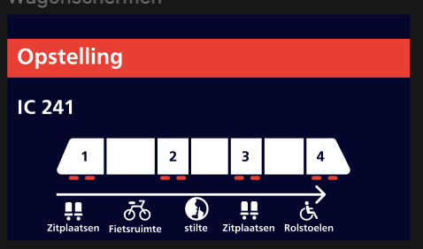
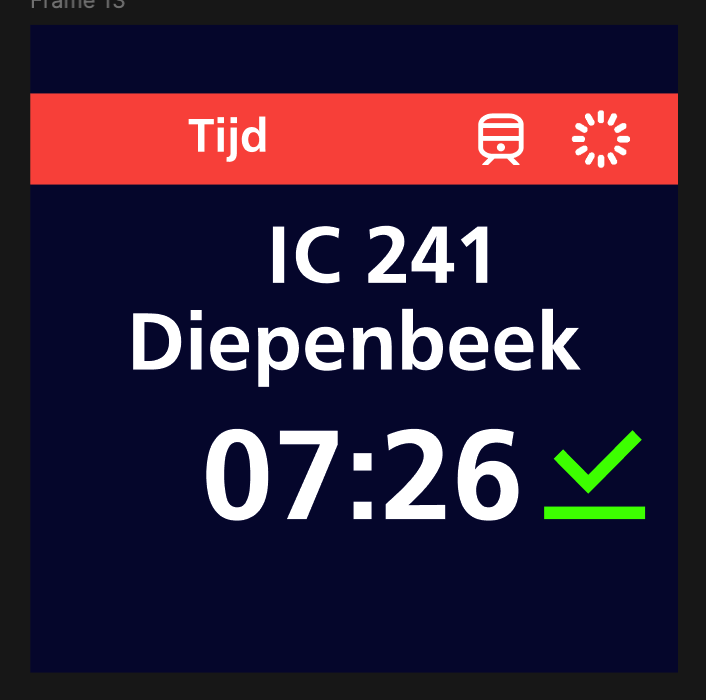
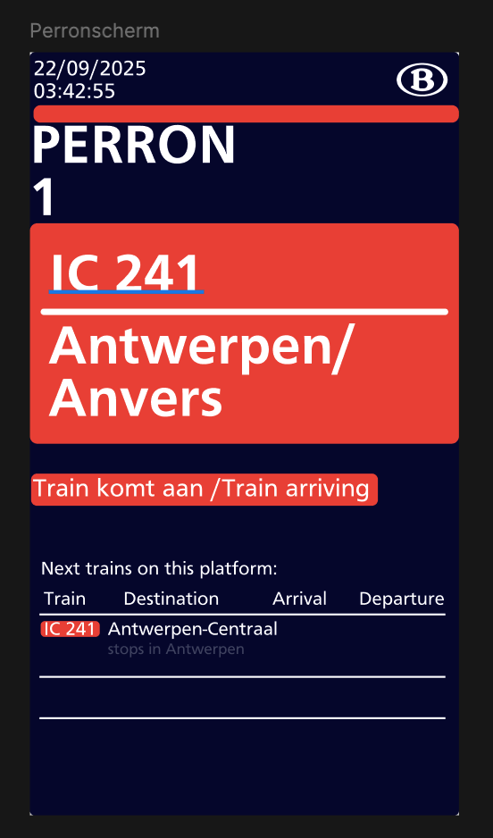

13 oktober 2025
Deze week werkte ik aan kleur, typografie en UI-identiteit. Ik testte kleurcombinaties voor toegankelijkheid, koos typografie die past bij internationale bewegwijzering en experimenteerde met hoeveel contrast nodig is bij donkere stationsomgevingen.



Kleur en typografie hadden een enorme impact op leesbaarheid. Het was uitdagend om een balans te vinden tussen visuele stijl (NMBS look) en functionele duidelijkheid (MTA look). Deze week maakte het ontwerp echt volwassen.